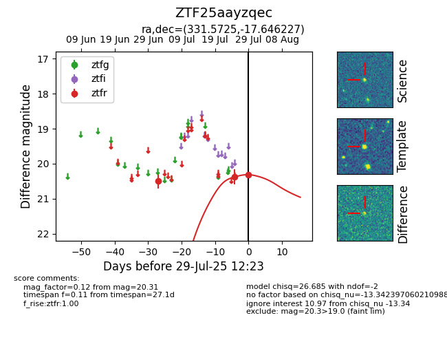

Target ZTF25aayzqec at 2025-07-29 12:23, see:
FINK: fink-portal.org/ZTF25aayzqec
Lasair: lasair-ztf.lsst.ac.uk/objects/ZTF25aayzqec
ALeRCE: alerce.online/object/ZTF25aayzqec
alt names
ZTF25aayzqec (ztf,fink)
coordinates:
equatorial (ra, dec) = (331.5725,-17.64623)
galactic (l, b) = (38.0865,-50.85120)
photometry
last ztfr=20.31
3 ztfr detections
